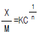
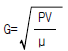
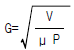
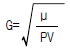
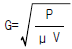
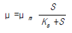
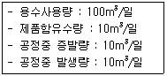

수질환경산업기사 (2004-03-07 기출문제)
1과목: 수질오염개론
1. 일반적으로 물속의 CO2가 증가되면 어떤 현상이 나타나겠는가?
- pH 저하
- 알칼리도 감소
- 밀도의 증가
- 탁도의 증가
(정답률: 알수없음)

2. 호소에서 나타나는 현상에 대해 바르게 기술된 것은?
- 심수층은 혐기성 미생물의 증식으로 유기물이 분해되어 수질이 양호하게 된다.
- 봄, 가을에는 일정한 방향을 가진 흐름은 없으나 밀도 변화에 의한 수직운동은 일어난다.
- 표수층의 용존산소의 과포화는 주로 수면의 교란을 통한 재폭기로 인하여 발생된다.
- 여름철에는 표수층과 심수층사이에 수온의 변화가 거의 없는 수온약층이 존재한다.
(정답률: 알수없음)
3. 글리신(C2H5O2N)이 호기성조건에서 CO2, H2O 및 NH3로 변화되고 다시 NH3가 HNO3로 변화될 때 글리신 10g 의 경우 총산소 필요량은 약 몇 g 인가?
- 15
- 20
- 30
- 40
(정답률: 알수없음)
4. 일반적으로 담수의 DO가 해수의 DO보다 높은 이유로 가장 적절한 것은?
- 수온이 낮기 때문에
- 염도가 낮기 때문에
- 산소의 분압이 크기 때문에
- 기압에 따른 산소용해율이 크기 때문에
(정답률: 알수없음)
5. 다음중 음료수에 페놀류를 문제삼는 가장 큰 이유는?
- 불쾌한 냄새를 내기 때문
- 경도가 높아서 물때가 생기기 때문
- 물거품을 일이키기 때문
- 물이 탁하게 되고 색을 띄기 때문
(정답률: 알수없음)
6. Whipple의 하천자정단계중 수중에 DO가 거의 없어 혐기성 Bacteria가 번식하며, CH4, NH4+-N 농도가 증가하는 지대는?
- 분해지대
- 활발한 분해지대
- 발효지대
- 회복지대
(정답률: 알수없음)
7. 상수원에 대한 수질검사 결과 질산성질소만 다량 검출되었다. 다음 사항 중 옳은 것은?
- 유기질소에 의한 일시적인 오염
- 유기질소에 의한 계속적인 오염
- 유기질소에 의한 영구적인 오염
- 지질(地質)에 의한 오염
(정답률: 알수없음)
8. 어느 하천에서 유속과 BOD 농도를 측정하였더니 0.2m/s와 15mg/ℓ 이었다. 하천이 정상적으로 흐를경우 하류 30km 지점의 BOD농도는? (단, 중간에는 지천의 유입이 없다고 가정하며, 자연 대수를 취한 경우에 K1=0.1/day이다. 1차반응기준)
- 12.6mg/ℓ
- 13.6mg/ℓ
- 14.6mg/ℓ
- 15.6mg/ℓ
(정답률: 알수없음)
9. BaCl2 0.1N 농도 500mL를 만드는데 소요되는 BaCl2· 2H2O량은? (단, BaCl2· 2H2O 분자량은 244.48)
- 6.11g
- 8.24g
- 10.14g
- 12.22g
(정답률: 알수없음)
10. 어느 물을 분석한 결과 BOD5가 180㎎/L, COD가 300㎎/L이었다. 이 물의 생물학적 분해가능한 COD에 대한 분해 불가능한 COD(BDCOD/NBDCOD) 비는? (단, k1 (상용대수) = 0.2day-1 이다.)
- 1.0
- 1.8
- 2.0
- 2.2
(정답률: 알수없음)
11. 다음 미생물의 증식곡선의 단계를 올바른 순서로 연결한 것은?
- 대수기 - 유도기 - 정지기 - 사멸기
- 유도기 - 대수기 - 사멸기 - 정지기
- 대수기 - 유도기 - 사멸기 - 정지기
- 유도기 - 대수기 - 정지기 - 사멸기
(정답률: 알수없음)
12. 20℃에서 용존산소의 포화농도는 9.07mg/ℓ 이며, 용존산소 농도를 5mg/ℓ 로 유지하기 위하여 활성오니 산소 섭취속도가 40mg/ℓ -hr인 포기기를 설치하였다. 이때 KLa값(총괄산소전달계수)은? (단, α = β = 1, 정상포기, 온도보정생략)
- 9.0/hr
- 9.8/hr
- 10.5/hr
- 12.3/hr
(정답률: 알수없음)
13. 시료 100mL를 0.⑤N H2SO4로 적정하였더니 4.2 mL 소비되었다. 이 시료의 총알카리도는? (단, f=1.0 임)
- 2.1 mg CaCO3/L
- 70.5 mg CaCO3/L
- 96.0 mg CaCO3/L
- 1⑤ mg CaCO3/L
(정답률: 알수없음)
14. 다음 중 환경공학 실무에 있어서 오염물질의 추적자로 주로 사용된 것은?
- 염화물
- 황화물
- 불화물
- 황산화물
(정답률: 알수없음)
15. 부영양화의 진행정도를 추정하는 Carlson의 관계식에서 호수의 상태를 파악할 수 있는 부영양화지수와 가장 관계가 먼 것은?
- 엽록소
- 투명도
- 총인
- 유기물
(정답률: 알수없음)
16. 지하수를 개발하여 농업용수로 사용코져 수질분석을 한 결과가 다음가 같다면 이 농업용수의 SAR 값은? (단, 원자량은 Na=23, Cl=35.5, Mg=24 ,Fe=26, Ca=40, S=32)Na+ = 1,150㎎/ℓ , Cl- = 71 ㎎/ℓ , Mg++ = 480 ㎎/ℓ , Ca++ = 300 ㎎/ℓ , Fe++ = 130 ㎎/ℓ
- 6.8
- 7.5
- 8.8
- 9.5
(정답률: 알수없음)
17. 시판하는 황산의 비중이 1.86, 중량 96% 농도 일 때 N농도는?
- 9.1
- 18.2
- 36.4
- 72.9
(정답률: 알수없음)
18. 전해질 M2X3의 용해도적 상수에 대한 표현으로 옳은 것은?
- Ksp = [M3+]2[X2-]3
- Ksp = [2M3+][3X2-]
- Ksp = [2M3+]2[3X2-]3
- Ksp = [M3+][X2-]
(정답률: 알수없음)
19. 다음 중 하천 및 호수의 부영양화를 고려한 생태계모델로 정적 및 동적인 하천의 수질, 수문학적 특성을 광범위하게 고려된 것은?
- Streeter-Phelps Model
- HSPF Model
- QUAL Model
- WQRRS Model
(정답률: 알수없음)
20. CH3COOH 150 mg/L를 함유하고 있는 용액의 pH는? (단, CH3COOH의 이온화상수 Ka = 1.8× 10-5)
- 2.6
- 3.7
- 4.8
- 5.9
(정답률: 알수없음)
2과목: 수질오염방지기술
21. 어떤 정유 공장에서 최소입경이 0.009cm인 기름방울을 제거하려고 한다. 부상속도는? (단, 물의 밀도는 1 g/cm3, 기름의 밀도 0.9 g/cm3점도는 0.01 g/cm.sec 이다.)
- 0.044 cm/sec
- 0.44 cm/sec
- 0.15 cm/sec
- 0.015 cm/sec
(정답률: 알수없음)
22. Colloid 평형을 이루는 힘인 인력과 반발력 중 반발력의 주된 원인이 되는 항목은?
- Zeta potential
- 중력
- Van der waal's force
- 표면장력
(정답률: 알수없음)
23. 하수고도처리공법인 수정 Bardenpho(5단계)에 관한 설명과 가장 거리가 먼 것은?
- 질소와 인을 동시에 처리할 수 있다
- 내부반송률을 낮게 유지할 수 있어 비교적 적은 규모의 반응조 사용이 가능하다
- 폐슬러지내의 인의 함량이 높아 비료가치가 있다
- 2차 호기성조(재폭기조)의 역할은 종침에서 탈질에 의한 Rising 현상 및 인의 재방출을 방지하는데 있다
(정답률: 알수없음)
24. 활성슬러지공법에서 SVI가 100일 때 포기조의 MLSS 농도를 2500 mg/L로 유지하기 위해서는 슬러지 반송율을 원유입수의 몇 %로 하면 되는가?
- 21.2%
- 25.5%
- 29.2%
- 33.3%
(정답률: 알수없음)
25. MLSS농도가 2500mg/ℓ 이고 30분 침강후의 슬러지용적이 25%인 경우 활성슬러지의 SVI는?
- 75
- 100
- 125
- 150
(정답률: 알수없음)
26. 미생물이 분해 불가능한 유기물을 제거하기 위하여 흡착제인 활성탄을 사용하였다. COD가 56mg/ℓ 인 원수에 활성탄 20mg/ℓ 를 주입시켰더니 COD가 16mg/ℓ 으로, 52mg/ℓ를 주입시켰더니 COD가 4mg/ℓ 로 되었다. COD 9mg/ℓ 로 만들기 위해 주입되어야 할 활성탄 양은? (단, Freundrich 등온공식

을 이용하라)- 28.4 mg/ℓ
- 31.3 mg/ℓ
- 39.5 mg/ℓ
- 42.3 mg/ℓ
(정답률: 알수없음)
27. 현재 인구 10만인 도시의 년간 인구 증가율이 12.5% 라면 20년 후의 계획 급수량은? (단, 인구추정방법은 등비급수적 추정방법으로 하며, 계획년도의 급수보급율 90%, 1인 1일 급수량 550ℓ 기타조건은 고려하지 않음)
- 3.8× 105m3/d
- 4.6× 105m3/d
- 5.2× 105m3/d
- 6.1× 105m3/d
(정답률: 알수없음)
28. 활성슬러지 공법에서 핀플록(Pin Floc)현상이 발생하였을 때의 대책으로 가장 알맞는 것은?
- 폭기조 MLSS를 증가시킨다
- 교반속도를 감소시킨다
- 용존산소농도를 증가시킨다
- SRT를 단축시킨다
(정답률: 알수없음)
29. 지하수 혹은 저수지 물에 철과 망간이 법규제 농도 이상 존재하고 있다. 이를 제거하는 방법과 가장 거리가 먼것은?
- 질산염 혹은 아질산염 주입 제거
- Mn을 코팅한 녹사(綠沙)메디아를 사용하여 제거
- 염소 또는 과망간산염을 주입 제거
- 폭기로 제거
(정답률: 알수없음)
30. 슬러지 개량방법 중 세정(Elutriation)에 관한 설명으로 적합하지 않는 것은?
- 알카리도를 줄이고 슬러지탈수에 사용되는 응집제량을 줄일 수 있다
- 비료성분의 순도가 높아져 가치를 상승시킬 수 있다
- 소화슬러지를 물과 혼합시킨 다음 재침전시킨다
- 슬러지의 탈수 특성을 좋게 하기 위한 직접적인 방법은 아니다
(정답률: 알수없음)
31. 생물막법의 처리특성이 아닌 것은?
- 수량의 변동에 강하다.
- 수질의 변동에 강하다.
- 슬러지 발생량이 많다.
- 저농도의 폐수처리가 가능하다.
(정답률: 알수없음)
32. 활성슬러지법에서 F/M비에 대한 설명으로 알맞는 것은?
- F/M 비율의 단위는 BOD㎏/m3-day으로 표현된다.
- F/M 비율을 크게 할수록 세포 체류시간은 길어진다.
- F/M 비를 크게 할수록 조내의 유기물질 제거율이 증가된다.
- F/M비가 낮을수록 잉여슬러지 생산량은 적어진다.
(정답률: 알수없음)
33. 하수처리를 위한 일차침전지의 설계기준 중 잘못된 것은?
- 유효수심은 2.5∼4m로 한다.
- 침전시간은 계획1일최대오수량에 대하여 6∼8시간을 표준으로 한다.
- 표면적부하율은 계획1일최대오수량에 대하여 25∼40m3/m2· day로 한다.
- 침전지 수면의 여유고는 40∼60cm 정도로 한다.
(정답률: 알수없음)
34. 다음 중 물리· 화학적 질소제거 공정이 아닌 것은?
- Air Stripping
- Breakpoint chlorination
- Ion exchange
- Sequencing Batch Reactor
(정답률: 알수없음)
35. 물의 혼합정도를 나타내는 속도경사 G를 구하는 공식은 ? (단, μ :물의 점성계수, V:반응조 체적, P:동력)




(정답률: 알수없음)
36. 1차 침전지로 유입하는 생하수의 SS 농도가 300mg/ℓ 이고 유출수는 120mg/ℓ 이다. 유량이 1,000m3/d 일때 침전지에서 발생되는 슬러지의 량은? (단, 슬러지의 함수율은 96% 이고 비중은 1.0으로 본다 유기물분해등 기타조건은 고려하지 않음)
- 4.0 m3/d
- 4.5 m3/d
- 5.0 m3/d
- 5.5 m3/d
(정답률: 알수없음)
37. 다음은 세포증식과 관련한 Monod형태의 동역학식을 나타낸 것이다. 잘못 설명된 것은?

- μ 는 비성장률로 단위는 시간-1 이다.
- μ m 는 최대 비성장률로 단위는 시간-1 이다
- S 는 성장제한 기질의 농도로 단위는 질량을 단위 부피로 나눈 것으로 쓸 수 있다.
- Ks 는 속도 상수로 최대성장률이 1 일 때의 기질의 농도이다.
(정답률: 알수없음)
38. 회전원판법의 일반적 특성과 가장 거리가 먼 것은?
- 단회로 현상의 제어가 쉽다.
- 공기에 노출되기 때문에 저온시 처리효율이 크게 떨어진다.
- 슬러지 반송이 불필요하다.
- 처리수의 투명도는 좋으나 질산화률이 낮다.
(정답률: 알수없음)
39. BOD 1.0kg 제거에 필요한 산소량은 1.0 kg이다. 공기 1m3에 포함된 산소량이 0.277kg이라 하면 활성슬러지에서 공기용해율이 4%(V/V%)일 때 BOD 1.0kg을 제거하는데 필요한 공기량은?
- 80.3 m3
- 90.3 m3
- 100.5 m3
- 110.8 m3
(정답률: 알수없음)
40. 어느 식품공장의 폐수를 호기성 생물처리법으로 처리하고자 수질을 분석한 결과 질소분이 없어 요소를 가하였다. 얼마의 주입량이 필요한가? (단, 폐수수질은 pH: 6.8, SS: 80mg/L, BOD: 2500 mg/L인: 30mg/L, 전질소: 0, 요소: (NH2)2CO, BOD:N:P=100:5:1 기준.)
- 167 mg/L
- 268 mg/L
- 326 mg/L
- 433 mg/L
(정답률: 알수없음)
3과목: 수질오염공정시험방법
41. BOD 측정에 관한 설명중 틀린 것은?
- 호기성 미생물의 작용에 의한 것이므로 충분한 용존 산소가 필요하다.
- 희석수에 완충액으로써 MgSO4, CaCl2, FeCl3를 첨가한다.
- 희석수를 식종하는 경우 5일후의 산소 감소율이 40∼70%되는 것이 적당하다.
- 시료가 산성 또는 알칼리성을 나타내거나 잔료염소등 산화성물질을 함유하였거나 용존산소가 과포화 되어있을 때에는 전처리를 행한다.
(정답률: 알수없음)
42. 수질오염 공정시험법 중 각 시험은 따로 규정이 없는 한 어느 온도범위에서 시험하는가?
- 1℃ - 35℃
- 15℃ - 25℃
- 10℃ - 20℃
- 5℃ - 15℃
(정답률: 알수없음)
43. 4각 위어의 수두 80cm, 절단의 폭 5m이면 유량은? (단, 유량계수는 1.6이다.)
- 4.7m3/min
- 5.7m3/min
- 6.5m3/min
- 7.5m3/min
(정답률: 알수없음)
44. 인산염인 측정시험과 관련된 내용으로만 짝지어 진 것은?(단, 흡광광도법 기준)
- 몰리브덴산암모늄, 염화제일주석, 적색
- 몰리브덴산암모늄, 염화제일주석, 청색
- 황산파라륨, 염화안티몬, 적색
- 황산파라륨, 염화안티몬, 청색
(정답률: 알수없음)
45. 어떤 공장폐수의 COD를 측정하기 위해 시료 10㎖에 물을 가해 100㎖로 하여 조작하였더니 적정에 소비된 N/40 과망간산칼륨이 5.1㎖ 소요되었다. 이 공장 폐수의 COD값을 구하면?(단, 공시험 적정에 요한 N/40 과망간산칼륨은 0.1㎖로 하고, N/40 과망간산칼륨의 역가는 1.0으로 한다.)
- 400mg/L
- 200mg/L
- 100mg/L
- 80mg/L
(정답률: 알수없음)
46. 비소를 유도 결합 플라스마 발광도법에 따라 정량분석을 할 경우 파장범위와 정량범위는?
- 193.70nm, 0.⑤ - 100mg/ℓ
- 213.86nm, 0.0⑤ - 45mg/ℓ
- 226.50nm, 0.0⑤ - 0.15mg/ℓ
- 324.75nm, 0.002 - 0.01mg/ℓ
(정답률: 알수없음)
47. 다음 중 가스크로마토그래피법에 의한 폴리클로리네이티드 비페닐 분석시 이용하는 검출기로 가장 적절한 것은?
- ECD
- FID
- FPD
- TCD
(정답률: 알수없음)
48. 다음중 흡광광도법으로 정량하는 물질이 아닌 것은?
- 총인
- 노르말헥산 추출물질
- 불소
- 페놀
(정답률: 알수없음)
49. pH를 20℃에서 4.00로 유지하는 완충액으로 가장 적절한 것은?
- 인산염완충액
- 염화암모늄, 암모니아완충액
- 초산염완충액
- 염화칼륨, 수산화나트륨완충액
(정답률: 알수없음)
50. 대장균군의 정성시험(최적확수시험법)에 대한 설명중 옳지 않은 것은?
- 완전시험에는 엔도 또는 EMB 한천배지를 사용한다.
- 추정시험시 배양온도는 35 - 37℃ 범위이다.
- 추정시험에서 가스의 발생이 있으면 대장균군의 존재가 추정된다.
- 확정시험시 배지의 색깔이 갈색으로 되었을 때는 완전시험을 생략할 수 있다.
(정답률: 알수없음)
51. 예상 BOD 값에 대한 사전경험이 없을 때 BOD 시험의 희석법에 관한 설명중 옳지 않은 것은?
- 오염된 하천수는 25 - 50 %의 시료가 함유하도록 희석, 조제한다.
- 처리하여 방류된 공장폐수는 5 - 25%의 시료가 함유하도록 희석, 조제한다
- 처리하지 않은 공장폐수는 1 - 5%의 시료가 함유하도록 희석, 조제한다
- 강한 공장폐수는 0.1 - 1.0%의 시료가 함유하도록 희석, 조제한다
(정답률: 알수없음)
52. 어느 하천의 일정장소에서 시료를 채수코자 한다. 그 단면의 가장 깊은 곳의 수심이 1.5m일 경우 채수위치는 모두 몇개소가 되겠는가?
- 1개소
- 2개소
- 3개소
- 4개소
(정답률: 알수없음)
53. 흡광광도법에 관한 다음 설명중 적절하지 않는 것은?
- 파장이 200 - 900nm에서 측정한다.
- 측정된 흡광도는 1.2 - 1.5의 범위에 들도록 시험액 농도를 선정한다.
- C = 1mol, ℓ =10mm일때의 ε 값을 몰흡광계수라 하고 K로 표시한다.
- 빛이 시료용액중에 통과할 때 흡수나 산란 등에 의하여 강도가 변화하는 것을 이용한다.
(정답률: 알수없음)
54. 부유물질에 관한 사항중 옳은 것은?
- 1⑤ - 110℃의 건조기 안에서 1시간 건조후 상온에서 냉각한다.
- 사용한 여과기의 하부여과재를 정제수로 용해시킨후, 씻어내 오차를 줄인다.
- 입경이 큰 고형물질을 함유한 시료는 세게 흔들어 섞은 다음 2mm의 체를 통과한 시료로 실험한다.
- 정량범위는 10mg이상이다.
(정답률: 알수없음)
55. 다음 크롬 분석(흡광광도법)에 관한 설명 중 틀린 것은?
- 발색온도는 20 - 25℃로 하며 흡광도는 440nm에서 측정한다.
- 발색시 황산의 최적농도는 0.2N이다.
- 시료중 철이 2.5mg이하로 공존할 경우에는 디페닐 카르바지드 용액을 넣기 전에 5% 피로인산나트륨10수화물 용액 2mL를 넣어주면 영향이 없다.
- 과망간산칼륨으로 시료내 크롬이온 전체를 6가크롬으로 산화시킨다.
(정답률: 알수없음)
56. 다음 실험항목 중 가열반응 실험시간이 가장 짧은 것은?
- 생물화학적산소요구량(BOD)
- 중크롬산칼륨법에 의한 COD
- 산성 100℃에서 과망간산칼륨법에 의한 COD
- 알칼리성 100℃에서 과망간산칼륨법에 의한 COD
(정답률: 알수없음)
57. 전기전도도에 관한 설명중 알맞지 않은 것은?
- 용액이 전류를 운반할 수 있는 정도를 말한다.
- 전기전도도는 온도영향이 크므로 측정 결과치의 통일을 기하기 위해 25℃ 값으로 환산 기록한다.
- 국제단위계인 mS/m (millisiemens/meter) 또한 μ S/cm (microsiemens/centimeter)단위로 측정결과를 표시하고 있다.
- mS/m=1000μ S/cm(또는 1000μ mhos/cm)이다.
(정답률: 알수없음)
58. pH 미터기의 조작법에 관한 주의사항들이다. 잘못된것은?
- pH meter는 전원을 넣어 5분이상 경과후에 쓴다.
- pH meter의 재현성은 ± 0.⑤ 이내이면 된다.
- pH 표준액으로 보정할 때는 온도보정을 하여야 한다.
- 유리전극을 사용하지 않을 때는 1%의 식염수에 담가둔다.
(정답률: 알수없음)
59. 어떤 도금공장에서 도금하기 위하여 용량이 1000ℓ 인 전기도금조에 NaCN 4.9g을 용해시켜 1000L가 되게 하였다 이 도금액중의 CN- 이온의 농도는 몇 mg/ℓ 인가 ? (단, 원자량은 Na=23, N=14, C=12 이다)
- 2.3 mg/ℓ
- 2.6 mg/ℓ
- 2.9 mg/ℓ
- 3.1 mg/ℓ
(정답률: 알수없음)
60. 수질오염 공정 시험법에서 진공이라 함은?
- 15 mmHg 이하
- 35 mmHg 이하
- 20 mmHg 이하
- 25 mmHg 이하
(정답률: 알수없음)
4과목: 수질환경관계법규
61. '과징금 부과실적'의 위임업무보고 횟수는?
- 연 1회
- 연 2회
- 연 4회
- 연 12회
(정답률: 알수없음)
62. 폐수종말처리시설 운영자의 방류수수질검사 횟수기준으로 적절한 것은?(단, 2000m3/일 이상의 규모인 경우)
- 매일 1회 이상
- 주 1회 이상
- 월 2회 이상
- 월 1회 이상
(정답률: 알수없음)
63. 수질오염방지시설중 화학적 처리시설이 아닌 것은?
- 침전물 개량시설
- 소각시설
- 중화시설
- 증류시설
(정답률: 알수없음)
64. 최초의 배출시설을 설치한 경우 환경관리인 임명신고 기간은?
- 임명후 지체없이
- 임명한 후 5일이내
- 배출시설 가동개시신고와 동시에
- 배출시설 등록허가와 동시에
(정답률: 알수없음)
65. 시도지사는 '지정호소수질보전계획' 을 몇 년마다 수립하여야 하는가?
- 3년
- 5년
- 7년
- 10년
(정답률: 알수없음)
66. 음이온 계면활성제(ABS)의 하천의 수질 환경기준치는?
- 0.01mg/ℓ 이하
- 0.1mg/ℓ 이하
- 0.⑤mg/ℓ 이하
- 0.5mg/ℓ 이하
(정답률: 알수없음)
67. 수질환경보전법상 공공수역에 해당되지 않은 것은?
- 상수관거
- 농업용수로
- 지하수로
- 운하
(정답률: 알수없음)
68. 오염도 검사기관이 아닌 곳은?
- 환경관리공단의 소속사업소
- 도의 보건환경연구원
- 유역환경청
- 환경기술연구원
(정답률: 알수없음)
69. 사업장별 환경관리인의 자격기준으로 틀린 것은?
- 1종 및 2종사업장중 1개월간 실제 작업한 날만을 계산하여 1일 평균 17시간이상 작업하는 경우에 해당사업장은 관리인을 각 2인 이상을 두어야 한다.
- 연간 90일미만 조업하는 1, 2, 3종 사업장은 4, 5종사업장의 환경관리인을 선임할 수 있다.
- 대기환경관리인으로 임명된 자가 수질환경관리인의 자격을 함께 갖춘 경우에는 수질환경관리인을 겸임 할 수 있다.
- 공동방지시설에 있어서 폐수 배출량이 1, 2종 사업장 규모에 해당하는 경우 3종 사업장에 해당하는 환경관리인을 둘 수 있다.
(정답률: 알수없음)
70. 다음의 사업장에서 발생하는 폐수배출량은?

- 130m3/일
- 90m3/일
- 80m3/일
- 70m3/일
(정답률: 알수없음)
71. 농공단지의 폐수종말처리시설 방류수수질기준 중 맞는 것은?(단, 2007.12.31 까지 기준)
- BOD 50 mg/L 이하
- COD 70 mg/L 이하
- SS 40 mg/L 이하
- T-N 60 mg/L 이하
(정답률: 알수없음)
72. 수질환경보전법상 100만원 이하의 벌금에 해당되는 경우는?
- 환경관리인의 요청을 정당한 사유없이 거부한 자
- 배출시설등의 운영사항에 관한 기록을 보존하지 아니한 자
- 배출시설등의 운영사항에 관한 기록을 허위로 기록한자
- 환경관리인등의 교육을 받게 하지 아니한 자
(정답률: 알수없음)
73. 수질환경보전법상 환경관리인 교육에 관한 설명으로 틀린것은?
- 교육기관은 국립환경연구원과 환경보전협회이다
- 기술요원 또는 환경관리인은 3년마다 1회이상 교육을 이수하여야 한다.
- 지방환경청장은 당해 지역 교육계획을 매년 1월31일까지 환경부장관에게 보고하여야 한다.
- 시도지사등은 관할 구역안의 교육대상자를 선발하여 그 명단을 당해 교육과정개시 15일전까지 교육기관의 장에게 통보하여야 한다.
(정답률: 알수없음)
74. 한강수계상수원수질개선및주민지원등에관한법률에 의하여 설치된 한강수계관리위원회의 위원이 아닌 것은?
- 환경부장관
- 건설교통부장관
- 한국수자원공사사장
- 한국전력공사사장
(정답률: 알수없음)
75. 배출부과금 납부통지를 받은 사업자는 조정신청을 할 수 있는 기간은 납부통지를 받은 날부터 며칠 이내 인가?
- 15일
- 30일
- 45일
- 60일
(정답률: 알수없음)
76. 어느 사업장의 연중 1일 폐수배출량의 범위가 600 ±150m3 이다. 이 사업장은 몇 종 사업장인가?
- 1종
- 2종
- 3종
- 4종
(정답률: 알수없음)
77. 초과부과금의 산정기준 중 총인 1킬로그램당 부과액수는?
- 3000원
- 2000원
- 1000원
- 500원
(정답률: 알수없음)
78. 폐수처리업의 등록을 하고자 하는 자는 등록신청서를 어디에 제출하여야 하는가?
- 환경부장관
- 시도지사
- 관할 유역환경청장
- 군수, 구청장
(정답률: 알수없음)
79. 특정수질유해물질이 아닌 것은?
- 디클로로메탄
- 구리 및 그화합물
- 셀레늄 및 그화합물
- 니켈 및 그화합물
(정답률: 알수없음)
80. 낚시제한구역안에서 1인당 4대이상의 낚싯대를 사용하여 낚시행위를 한 자에 대한 벌칙기준으로 적절한 것은？
- 200만원 이하의 벌금
- 100만원 이하의 벌금
- 100만원 이하의 과태료
- 50만원 이하의 과태료
(정답률: 알수없음)